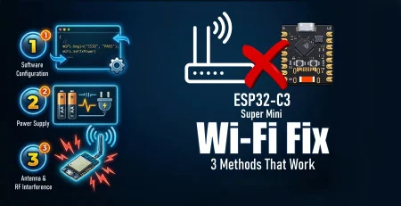

💳 CURSOS PAGOS

Home Assistant local LLM vs Gemini for Home: qual é o melhor?
O universo dos modelos de código aberto avança em ritmo acelerado — quem já dedicou algum tempo rodando LLMs locais pode confirmar. O projeto ambicioso de rodar um modelo de linguagem no seu próprio hardware agora é uma tarefa simples para uma tarde de fim de semana. Isso se espalhou tão rapidamente pela automação residencial inteligente que hoje você consegue criar uma estrutura capaz de rivalizar com o que o Google promove como seu recurso de IA mais avançado.
O universo dos modelos de código aberto avança em ritmo acelerado — quem já dedicou algum tempo rodando LLMs locais pode confirmar. O projeto ambicioso de rodar um modelo de linguagem no seu próprio hardware agora é uma tarefa simples para uma tarde de fim de semana. Isso se espalhou tão rapidamente pela automação residencial inteligente que hoje você consegue criar uma estrutura capaz de rivalizar com o que o Google promove como seu recurso de IA mais avançado.

Correção de WiFi do ESP32 C3 Super Mini - 3 Métodos que Funcionam
O seu ESP32 C3 Super Mini está desconectando do WiFi do nada ou perdendo o sinal Bluetooth? Você não está sozinho — e aqui estão 3 métodos que realmente funcionam.
O seu ESP32 C3 Super Mini está desconectando do WiFi do nada ou perdendo o sinal Bluetooth? Você não está sozinho — e aqui estão 3 métodos que realmente funcionam.